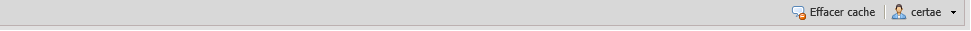
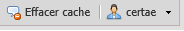

La barre d’états¶
Figure 11 : Barre d’états.
La barre d’états est divisée en deux parties :
la barre de message :¶
L’application du prototypeur communique avec l’utilisateur par l’entremise de la barre de messages pour confirmer une opération ou envoyer un message d’erreur. Les messages d’erreur sont affichés en utilisant une police en couleur rouge.

Figure 12 : exemple de message
Dans la figure ci-dessus, le message montre l’exécution de l’opération « doModelPrototype ».

Figure 13 : exemple de message d’erreur.
Exemple de message d’erreur : problème de communication avec le serveur.
Les boutons :¶
Figure 14 : Boutons de la barre d’états.
- Le premier bouton permet de fermer tous les onglets ouverts et vider la mémoire cache.
- Le deuxième bouton affiche le nom de l’utilisateur, vous pouvez cliquer sur la flèche noire de ce bouton pour accéder au bouton de fermeture de session.